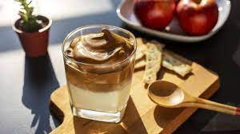

Dalgona Coffe
Bahan :
- 2 sendok makan NESCAFÉ CLASSIC
- 2 sendok makan gula putih
- 125ml susu cair
- 1 gelas es batu
Cara :
- Masukkan NESCAFÉ Classic dan gula ke dalam mangkuk kecil, lalu tambahkan air panas sebanyak 2 sendok makan.
- Aduk hingga mengembang dan menjadi whipped coffee.
- Tuangkan susu cair ke dalam gelas dan masukkan es batu sesuai selera.
- Tuangkan whipped coffee yang telah kamu buat sebelumnya.
- Dalgona Coffee kamu siap.